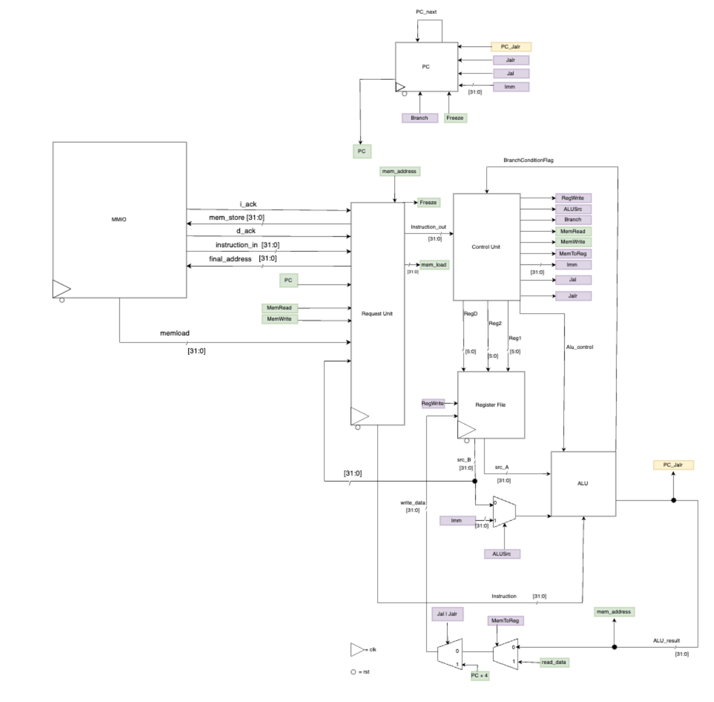
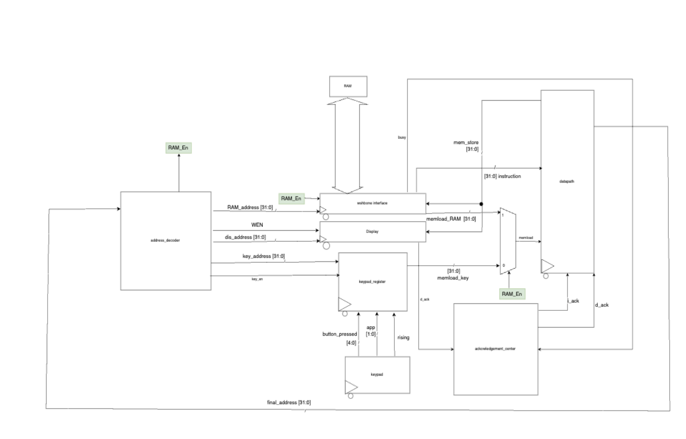
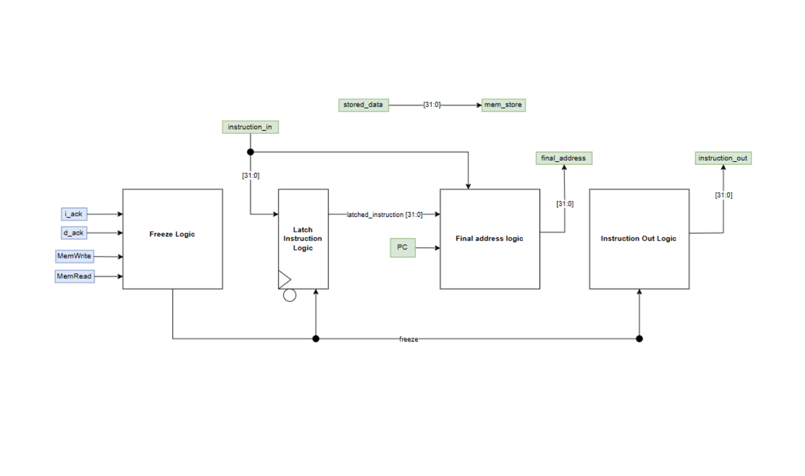
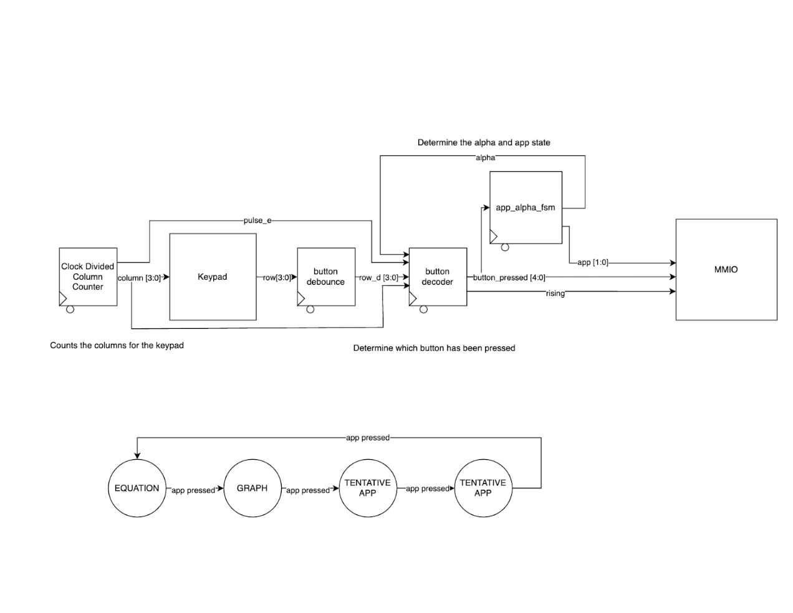
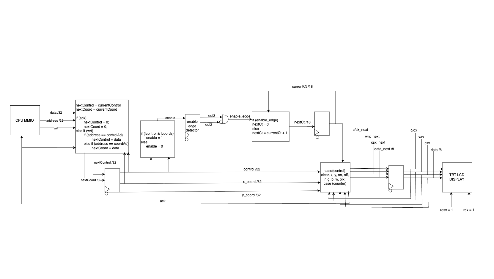

RISC-V 32 bit CPU with I Cache and Graphing Peripherals
2025
Overview
The RTL block diagrams (see below) detail the RISC-V CPU, peripherals, and multi mapped I/O (MMIO) systems. As part of final CPU optimizations, an I-cache was added primarily for latency reductions. In addition to standard RISC-V instructions, the CPU is capable of multiplication and floating point conversions. The calculator algorithm, written in RISC-V assembly, can be found in the linked repo. Final hardening was conducted through Caravel System on Chip (SoC) and taped out on STARS' NEBULA III chip (pending arrival).
Technical Details

Top Level Diagram detailing full integration.

CPU RTL Diagram - Unique from standard RISC-V CPU architecture, it implements a request unit for MMIO interaction.

MMIO RTL Diagram - Interacts with RAM through wishbone protocol.

Request Unit RTL Diagram - Custom built to handle CPU-MMIO interactions

Keypad RTL Diagram - UART protocol for the 4x4 matrix keypad used in design.

Screen RTL Diagram - TRT LCD Display, sends custom commands from datapath to display through SPI.
Contributions
- Implemented 8-bit parallel SPI protocol with custom counting logic for MMIO-screen communication.
- Verified and resolved display issues with SPI communication to the screen via testbenching.
- Integrated screen with MMIO, ensuring proper implementation with keypad, CPU and RAM storage.
- Wrote/debugged RISC-V assembly code to ensure graphing functionality.